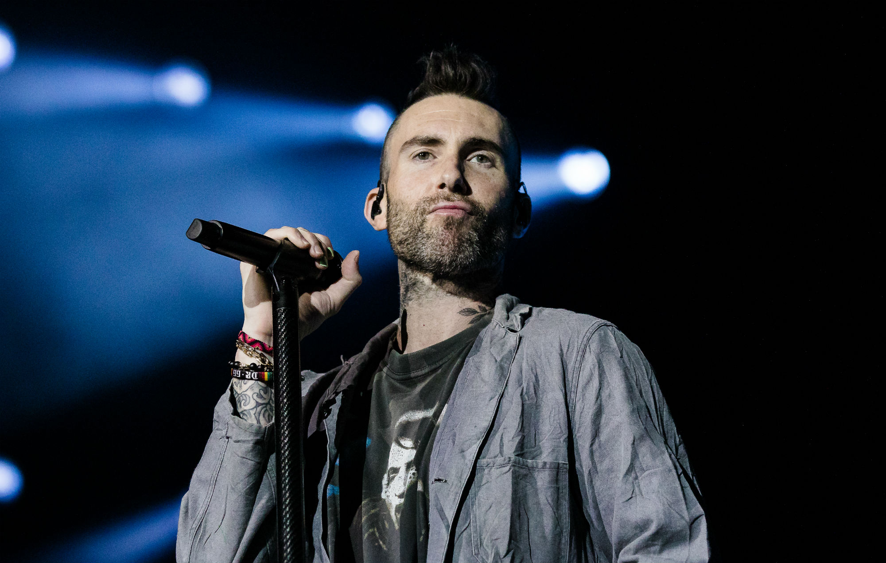

#NewMusicTuesday: Maroon 5, Red Pill Blues
Sorry to break it to you, Maroon 5 diehards, but Red Pill Blues sounds nothing like classic Maroon 5. But don't worry - Adam Levine's sexy voice and the band's clean, melodic artistry are ever-present, and now with the welcome addition of electro beats.
ICYMI, Red Pill Blues is a reference to The Matrix, but Levine is hesitant about assigning a specific meaning to the name of the album - he wants fans to decide what it means to them. And speaking of fans, the lead singer says he's not worried about disappointing a few along the way with a new sound. It's all about evolution, and not getting stuck in a rut. You could never disappoint us, Adam!
To bring a fresher feel to the record, Maroon 5 collaborated with a mix of artists, including Kendrick Lamar, Future, LunchMoney Lewis and Julia Michaels, who added a feminine touch to "Help Me Out."" The band's sixth studio album, Red Pill Blues debuted at No. 2 on the Billboard 200 when it was released on . Just days before that, Maroon 5 announced its North American tour, which will take place from May to October next year. We are so ready!
Adam Levine in Hawaii
Artist of the Week: Maroon 5
It's getting harder and harder to breathe Maroon 5 fans, as the wait is finally over for pop-rock quartet's brand new album JORDI, out now! To celebrate, Maroon 5 is joining iHeartRadio for an exclusive album listening party, hosted by Valentine.
Maroon 5's iHeartRadio Album Listening Party is set to stream free next week, , at 8pm local time on iHeartRadio's Hit Nation and Today's Mix digital stations, and on iHeartRadio's YouTube channel. Fans can listen along to hear needle drops from the new record, as well as an exclusive interview with frontman Adam Levine and even an intimate live performance of some new songs!
The album is dedicated to the band's childhood friend, Jordan Feldstein, who later became Maroon 5's manager before passing away in .